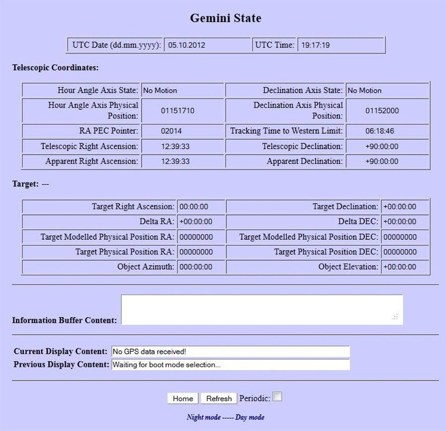

|  |
| This Page shows the current state of the Gemini-2. |
| Use the Periodic checkbox to have the page auto-refresh itself. |
| If your Gemini-2 is connected Via Ethernet, turned ON, and Responds to http://gemini then this link will open this page in the Gemini-2 web interface, after prompting for a log-in. |